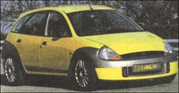

Though innovative in its body design and computerized/ GPS dash, this nickel-metal battery-run car typifies that breed of electric auto the public may not have the patience for. Inevitably, it seems, those accustomed to a once weekly fill-up and the high-gear acceleration of a combustion engine will be frustrated